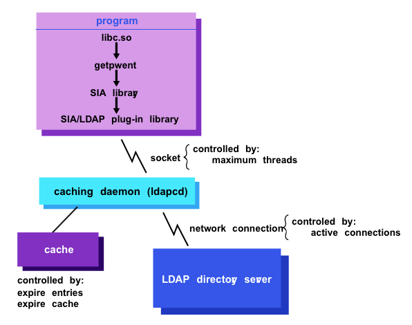

Pour activer SSL sur le client Tru64, il faut configurer le démon ldapcd (LDAP Caching Demon) responsable des communications LDAP entre l’architecture SIA (voir Chapitre 3 section 4) et le serveur LDAP. La figure 4.3 page 95 reprend le mécanisme mis en place dans un environnement Tru64.

Fig. 4.3 – SIA et LDAP Caching Daemon
L’architecture SIA permet d’empiler différents mécanismes d’authentification dont un module LDAP. Le démon ldapcd s’occupe des communications LDAP et de la mise en cache des données échangées avec le serveur. Le fichier /etc/ldapcd.conf est utilisé pour configurer ldapcd. Malheureusement, aucune information concernant la configuration de SSL pour le démon ldapcd n’est fournie, ni dans les pages de manuel (commande man) ni dans la documentation disponible sur le site de HP. Par contre, le code sources7 du démon ldapcd fournit des informations très utiles pour l’activation de SSL. L’extrait suivant est reprit du fichier common.h des sources du démon ldapcd.
/*
** structure for global configuration data
*/
typedef struct conf_st {
int connections; /* number of cached ldap connections */
int max_threads; /* max worker threads to spawn */
char *directory[16]; /* list of directory servers */
int num_servers; /* number of servers in list */
int usessl; /* flag for using ssl */
char *certdb; /* certificate database for ssl */
int referrals; /* flag for chasing referrals */
int usesasl; /* flag for using sasl bind */
int signdata; /* flag for gss data signing */
int encryptdata; /* flag for gss data encryption */
char *searchbase; /* directory searchbase */
short port; /* port to use for directory server */
int debug; /* debug parameter to enable logging */
int nodaemon; /* should ldapcd run as daemon or not */
int disablegroup; /* whether or not we use group info */
char *userbranch; /* LDAP user branch string */
char *groupbranch; /* LDAP group branch string */
int crypt_passwd; /* Should passwd be encrypted locally? */
} conf_t;
Cette structure, en langage C, définit les différents paramètres de configuration de ldapcd. La ligne 18 définit le flag usessl pour déterminer l’utilisation ou non de SSL. Quant à la variable certdb à la ligne 19, elle sous-entend la possibilité d’utiliser un fichier contenant des certificats. La première étape dans la configuration de ldapcd pour supporter SSL est donc la création de ce fichier.
A l’inverse des systèmes Debian ou Solaris, le client LDAP Tru64 ne travail pas avec le certificat de l’autorité de certification mais utilise les fichiers cert7.db et key3.db. Ces fichiers crées par Netscape sont des magasins de certificats et de clés publiques. Le fichier cert7.db contient la base de données des certificats de confiance et le fichier key3.db contient les clés publiques du client.
Le navigateur Netscape est utilisé pour créer le fichier (cert7.db) qui contiendra le certificat du serveur LDAP. Pour cela, il faut procéder comme suit :
~.netscape/cert7.db8 et ~.netscape/key3.db.https ://10.59.4.8:636/ correspondant à l’adresse et au port sécurisé du serveur LDAP. Le navigateur Web va tenter de se connecter au serveur LDAP en utilisant le protocole https. Ensuite, une boite de dialogue apparaît pour prévenir l’utilisateur et lui demander d’accepter ou non le certificat. Il faut alors cliquer sur "Next" jusqu’à accepter le certificat ("Accept this certificate forever"). Le certificat du serveur LDAP est maintenant dans le fichier cert7.db.Copier les fichiers cert7.db et key3.db dans le repertoire par défaut /etc/cert7.db (le créer si nécessaire). Il est possible de spécifier un répertoire en assignant une valeur au paramètre certdb du fichier ldapcd.conf.
ls /etc/cert7.db
cert7.db key3.db
Les fichiers cert7.db et key3.db créés, le fichier /etc/ldapcd.conf est maintenant mis à jour afin d’activer SSL. L’indicateur (flag) usessl est positionné à vrai (1). Il faut également modifier le numéro du port à contacter sur le serveur LDAP. Ainsi la valeur 636 est attribuée au paramètre port.
# paramètres SSL
port: 636
usessl: 1
La commande ldap_check permet de tester les modifications apportées au fichier ldapcd.conf.
# /usr/sbin/ldap/ldap_check
Loaded Configuration file /etc/ldapcd.conf
Connected to LDAP server on 10.59.4.8
Search base "dc=inpres,dc=be" confirmed
Retrieved Object class information
Password object class attributes verified
Group object class attributes verified
Directory configuration verified
Si une erreur survient (fichier key3.db ou cert7.db manquant), le message suivant est affiché.
/usr/sbin/ldap/ldap_check
Loaded Configuration file /etc/ldapcd.conf
Failed to initialize SSL client
Errors detected during directory configuration check
Pour que les nouveaux paramètres soient pris en compte, il reste à redémarrer le demon ldapcd.
/sbin/init.d/ldapcd restart
LDAP caching daemon (ldapcd) started
Jusqu’à présent, tout semble fonctionner correctement. Le client ldapsearch s’execute correctement, la commande ldap_check se connecte au serveur en utilisant SSL, le demon ldapcd démarre correctement avec SSL. Par contre la couche SIA ne réagit pas quand le client est configuré avec SSL. Le serveur ne reçoit aucune demande du client et seuls les l’utilisateurs locaux (définis dans le fichier passwd) peuvent s’authentifier. En modifiant le numéro de port (389 au lieu de 636) et en mettant en commentaire l’entrée usessl : 1, l’architecture SIA fonctionne correctement. La commande id fonctionne en mode normal (LDAP) mais pas en mode sécurisé (LDAPS).
id laurent
User not found in /etc/passwd file
Les services réseaux (telnet, ftp...) ne fonctionnent pas si le client est configuré pour utiliser SSL. Pourtant, le démon ldapcd est lié avec les bibliothèques libssl3.so et libssldap50.so ce qui devrait lui fournir le support du protocole SSL.
ldd /usr/sbin/ldapcd
Main => /usr/sbin/ldapcd
libssldap50.so => /usr/shlib/libssldap50.so
libldap50.so => /usr/shlib/libldap50.so
libssl3.so => /usr/shlib/libssl3.so
libprldap50.so => /usr/shlib/libprldap50.so
En fait, le client LDAP utilisant SSL ne parvient pas à établir toutes ses connexions avec le serveur LDAP. En effet, le paramètre connections du fichier ldapcd.conf définit un nombre de six connexions par défaut. En mode non sécurisé, le client parvient à établir les six connexions.
Connexion du client non sécurisé sur le port 389 :
/usr/sbin/netstat -na | grep 389
tcp 0 0 10.59.4.8.389 10.59.4.1.2675 ESTABLISHED
tcp 0 0 10.59.4.8.389 10.59.4.1.2676 ESTABLISHED
tcp 0 0 10.59.4.8.389 10.59.4.1.2677 ESTABLISHED
tcp 0 0 10.59.4.8.389 10.59.4.1.2678 ESTABLISHED
tcp 0 0 10.59.4.8.389 10.59.4.1.2679 ESTABLISHED
tcp 0 0 10.59.4.8.389 10.59.4.1.2680 ESTABLISHED
tcp 0 0 *.389 *.* LISTEN
Connexion du client LDAPS sur le port 636 :
/usr/sbin/netstat -na | grep 636
tcp 0 0 10.59.4.8.636 10.59.4.1.2682 ESTABLISHED
tcp 0 0 10.59.4.8.636 10.59.4.1.2683 ESTABLISHED
tcp 0 0 *.636 *.* LISTEN
Deux connexions LDAPS sur six sont effectuées avec succès. Le démon ldapcd est bloqué à l’établissement de la troisième connexion. Le problème est résolu en recompilant une version plus récente9 de OpenLDAP. La procédure pour compiler OpenLDAP sur Tru64 est donnée ci-dessous.
CC=cc
CPPFLAGS="-pthread -I/usr/local/include"
LDFLAGS="-I/usr/local/lib"
export CC CPPFLAGS LDFLAGS
configure --with-threads --enable-crypt --prefix=/usr/local --with-tls --enable-slapd
make depend
make
make test
make install
La configuration du nouveau serveur reste la même si ce n’est l’ajout du paramètre allow bind_v2 dans le fichier slapd.conf. En effet, le démon ldapcd utilise la version 2 de LDAP pour se connecter sur le serveur ce qui n’est pas accepté par défaut avec les dernières versions de OpenLDAP.
7 Les sources sont disponibles sur le CD-ROM Open Source fournit avec le système Tru64.
8 Sous UNIX, le caractère tilt représente le répertoire de départ (home directory) de l’utilisateur courant.
9 La nouvelle version utilisée est la 2.2.24 contre la version 2.0.27 fournie avec le système Tru64 5.1B